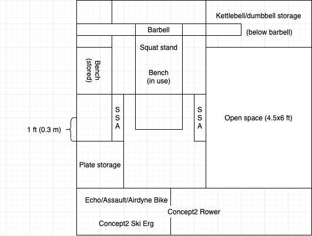

Why you should get a home gym, how to set it up, and equipment suggestions. This assumes the athlete is generalized and will not be doing any Olympic lifting (dropping heavy weights from high) or significantly heavy lifting.
A personal home gym poses a few distinct advantages compared to the stereotypical commercial gym.
Cost of a home gym depends heavily on a few things:
Overall, my total amount spent on home gym equipment is as follows:
Cost per item ($):
Total cost: $2420 (brief notes below)
The average commercial gym costs "between $40 and $50 a month" = $480-600 per year = $540 average. The lowest price I've seen is Planet Fitness at $10/month = $120/year. Depending on the membership cost, the breakeven point is:
\[\text{breakeven_avg} = \frac{$2420}{$540\text{/yr}} = 4.5 \, \text{yr}\] \[\text{breakeven_cheap} = \frac{$2420}{$120\text{/yr}} = 20.2 \, \text{yr}\]No more driving to the gym or making sure to go during business hours. Simply go to the home gym in 10 seconds at any time. Driving and time saved:
\[\text{miles_saved} = (2-4) \, \text{mi/drive} \times (3-5) \, \text{drive/wk} \times 50 \, \text{wk/yr} = (300-2000) \, \text{mi/yr}\] \[\text{gas_money_saved} = (300-2000) \, \text{mi/yr} \times \frac{1}{20} \, \text{gal/mi} \times $2.50/\text{gal} = $(40 - 250)/\text{yr}\] \[\text{time_saved} = (10-30) \, \text{min/drive} \times (3-5) \, \text{drive/wk} \times 50 \, \text{wk/yr} = (25-125) \, \text{hr/yr}\]No judgment, no one to tell you you're being too loud or annoying (except maybe the police and neighbors), wear (or not wear) whatever you want, don't have to rerack weights.
Equipment availability is completely up to you. No waiting for someone to finish up their sets, nor are you limited by lack of options (except financially). Choose what equipment to outfit your home gym with.
My focus is on strength and conditioning (S&C), so the equipment listed reflects that. Optional equipment is followed by "(1)", "(2)", or "(3)"—the higher the number, the more optional and less helpful towards general S&C goals. "Necessary" equipment (deemed so by me) has nothing following it. As seen, the only necessary equipment is a barbell, weight plates, and squat rack.
The used vs. new argument comes in to play, with the used option winning in a majority of battles.
While there is no GymFax to tell the history of gym equipment, it is not difficult to tell based on outwards appearances:
For equipment that has an internal engine or needs regular maintenance, it is more hazy. Take a Concept2 rower. You're supposed to lubricate the chain every 50 hours of use. How many people actually do this? Probably not many and there's no way to tell if you're not experienced with it. For "under-the-hood" items like these, I recommend buying new. The item is guaranteed to work properly, hasn't been possibly tarnished by a former owner, and the peace of mind is settling.
If you are set on buying a used "under-the-hood" piece of equipment, look into maintenance procedures and purchasing that equipment used beforehand. Ask the seller how they've maintained it. If the owner of a multi-million meter C2 looks puzzled about maintenance when you ask them, look elsewhere. And of course, always test use/ride the equipment for a few minutes.
This section will focus on minimizing the footprint of the gym and getting the most bang-for-buck space-wise. This assumes the ceiling is average height (9 ft = 2.75 m) and the room average size (10x10 ft = 3x3 m).
The Rogue SML-2C Squat Stand is a good squat rack example. Its height is 7.5 ft (2.3 m), footprint of 49x48 in (1.2x1.2 m) without a barbell and 86x48 in. (2.2x1.2 m) with a barbell, and weight capacity of 1000 lb (450 kg). Additional add-ons include:
The pull-bar should either be integrated with the squat rack or hanging from the ceiling. This takes up no extra floor space. If ceiling height is an issue, pull-ups can be done using a racked barbell, although this is not recommended.
Weight plates do not necessarily need to be stored on a plate tree, but it is convenient. Same for kettlebells and dumbbells: racks are fine and convenient, but not necessary.
Keep in mind this is for a small 10x10 ft (3x3 m) room. Anything bigger allows for more open space and/or additional/larger equipment.
Small footprint items, such as grip tools, recovery tools, or belts (dip and lifting), can easily be hung up on a wall hook or in between the main pieces of equipment.